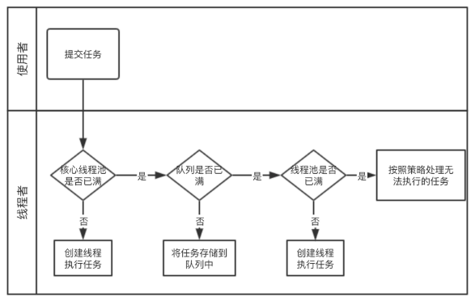
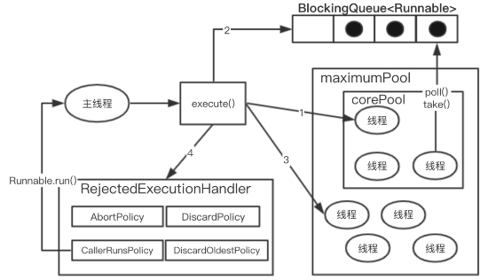

Java线程池
线程池带来的好处
1、降低资源消耗：重复利用已创建的线程降低线创建和销毁造成的消耗
2、提高响应速度：任务到达时，任务可以不需要等到线程创建就能立即执行
3、提高线程的可管理性：线程是稀缺资源，如无限制地创建，不仅会消耗系统资源还会降低系统的可维护性；使用线程池可以进行统一分配、调优和监控
线程池的执行流程

1、判断核心线程池里面的线程是否都在执行任务，如果不是则创建一个新的工作线程来执行任务
2、判断线程工作队列是否已满，如果工作队列没满，则将新提交的任务存储在这个工作队列中
3、线程池的线程是否都创建满了，如果没有，则创建一个新的工作线程来执行任务
4、如果线程池的线程已创建满，交给饱和策略来处理这个任务

1、如果当前运行的线程少于corePoolSize，则创建新线程来执行（需要获取全局锁）
2、如果运行的线程等于或者多于corePoolSize，则将任务加入到BlockingQueue
3、如果BlockingQueue已经满，则创建新的线程来处理任务（需要获取全局锁）
4、如果创建线程使得当前运行的线程超出maximumPoolSize，任务被拒绝，调用 RejectedExecutionHandler.rejectedExecution()
创建线程池
public ThreadPoolExecutor(int corePoolSize,
int maximumPoolSize,
long keepAliveTime,
TimeUnit unit,
BlockingQueue<Runnable> workQueue,
ThreadFactory threadFactory,
RejectedExecutionHandler handler);
corePoolSize（线程池基本大小）
来一个新任务时，如果当前的线程数量少于corePollSize，则创建新的线程执行任务（即使其它空闲的线程能处理任务）。可理解为工厂正式工数量。优先满足创建够corePollSize个线程，可以通过prestartAllCoreThreads方法，预创建，因为创建工作线程是需要加锁的，这样做可以尽量避免加锁。
runnableTaskQueue（任务队列）
用于保存待执行任务的阻塞队列。支持下面四种：
- ArrayBlockingQueue：基于数组，有界，先进先出
- LinkedBlockingQueue：基于链表，先进先出，吞吐量高于ArrayBlockedQueue
- SynchronousQueue：不存储元素的阻塞队列，插入操作必须等待另外一个线程调用移除操作
- PriorityBlockingQUeue：具有优先级的无限阻塞队列
ArrayBlockingQueue和LinkedBlockingQueue区别
1、延迟：向ArrayBlockingQueue添加元素更快（延迟小），因为它意味这只设置对Object数组元素的引用，而向LinkedBlockingQueue中添加元素意味者创建一个Node并设置其item、prev和next字段。另外当从LinkedBlockingQueue中删除元素时，删除的节点会变成垃圾，这可能会影响应用程序的性能。
2、内存消耗：ArrayBlockingQueue总是保存一个具有完整容量的Object数组，即使是空的。而LinkedBlockingQueue有多少元素占用多少空间，但每个元素都是具有3个对象字段的节点（item、prev、next）
3、吞吐量：LinkedBlockingQueue具有更好的吞吐量，因为它使用2个锁进行put和take，仅在边缘情况下进行同步（当count==0时，通过notEmpty,notFull进行同步）
private final ReentrantLock takeLock = new ReentrantLock();
private final Condition notEmpty = takeLock.newCondition();
private final ReentrantLock putLock = new ReentrantLock();
private final Condition notFull = putLock.newCondition();
public E take() throws InterruptedException {
E x;
int c = -1;
final AtomicInteger count = this.count;
final ReentrantLock takeLock = this.takeLock;
takeLock.lockInterruptibly();
try {
while (count.get() == 0) {
notEmpty.await();
}
x = dequeue();
c = count.getAndDecrement();
if (c > 1)
notEmpty.signal();
} finally {
takeLock.unlock();
}
if (c == capacity)
signalNotFull();
return x;
}
4、是否有界：ArrayBlockingQueue是有界的阻塞队列，通过数组存储元素，实例化时必须提供上限值，实例化之后不能再改变。LinkedBlockingQueue内部是通过链表存储元素，如果未指定上限，则使用Integer.MAX_VALUE作为上线。
5、锁：ArrayBlockingQueue使用单锁双重条件算法。LinkedBlockingQueue采用双锁，takeLock和putLock。ArrayBlockingQueue理论上也是可以使用双锁控制的，可能是因为性能和负载程度考虑而采用了单锁。
/** ArrayBlockingQueue */
final ReentrantLock lock;
private final Condition notEmpty;
private final Condition notFull;
maximumPoolSize（线程池最大数量）
如果队列满了，并且创建的线程数小于最大线程数，则线程池会再创建新的线程执行任务。可理解为工厂为了应变突然增加的需求量，额外可以招的临时工量（maximumPoolSize-corePoolSize）。如果上面用的是无界队列（LinkedBlockingQueue，PriorityBlockingQUeue），这个参数就没有效果。
ThreadFactory（创建线程的工厂）
可通过线程工厂给每个创建出来的线程设置更有意义的名字。推荐使用。
RejectedExecutionHandler（饱和策略）
- AbortPolicy：直接抛出异常
- DiscardPolicy：丢弃，不抛出异常
- CallerRunsPolicy：用调用者所在的线程来运行任务
- DiscardOldestPolicy：丢弃队列中最近的任务，并执行当前任务
- 实现RejectedExecutionHandler接口，自定义策略，如记录日志，任务持久化存储等
keepAliveTime（线程活动保持时间）
工作任务空闲后，保持存活的时间。如果任务多，执行时间短，可以调大时间，提高利用率。
TimeUnit（线程活动保持时间的单位）
可选单位有天、小时、分钟、毫秒、微妙、纳秒。
向线程池提交任务
- execut(Runnable)：不需要返回值
- submit(Runnable)：有返回值Future，Future.get会阻塞当前线程直到任务完成。也支持Future.get(timeout, unit)，阻塞一段时间，超时后抛出TimeoutException。Futrue内部通过
LockSupport实现。
关闭线程池
- shutdown：将线程池状态设置为SHUTDOWN，getTask会继续去任务，直到取完退出。阻止新提交的任务，已经提交的任务不会收到影响。
- shutdownNow：先将线程次的状态设置为STOP，然后尝试停止所有的线程，getTask不会再继续去任务了。返回等待执行任务的列表。
1、遍历线程池中的工作线程，然后逐个调用线程的interrupt方法来中断线程，无法响应中断的任务，不会被终止
2、调用后isShutdown()方法就会返回true
3、所有的任务都关闭后，才表示线程池关闭成功，这时isTerminated才会返回true
4、关闭后可通过awaitTermination等待
合理配置线程池
任务性质
- CPU密集型：配置尽可能少的线程，如配置Ncpu+1个线程的线程池
- IO密集型：配置尽可能多的线程，如2*Ncpu
- 混合型
- 如果可以拆分，将其拆分成一个CPU密集型任务和一个IO密集型任务，前提是两个任务的执行时长相差不大
- 相差太大，就没有必要拆分
任务优先级
优先级不同的任务可以通过优先级队列PriorityBlockingQueue来处理，让优先级高的先执行。这样可能出现优先级低的一直不会执行。
任务的执行时长
执行时间不同的任务，可以交给不通规模的线程池来处理，或者可以使用优先级队列，让执行时间短的任务先执行。
任务的依赖性
依赖数据库连接池的任务，因为任务等待时间长，CPU空闲时间长，线程数应该设置的较大。
等待队列
建议使用有界队列。如果任务处理异常，可能会使队列变的非常大，撑爆系统，使系统不稳定。
线程池的监控
- 通过线程池提供的参数进行监控
- taskCount：线程池需要执行的任务数量
- completeTaskCount：已完成的任务数量
- largestPollSize：曾创建过的最大线程数量
- getPollSize：线程池线程的数量
- getAcitiveCount：当前活动的线程数
- 通过扩展线程池进行监控
- 重写beforeExecute、afterExecute、terminated方法
- 可以在执行前，执行后，线程池关闭时执行一些代码
- 用来监控任务的平均执行时间，最大执行时间和最小执行时间